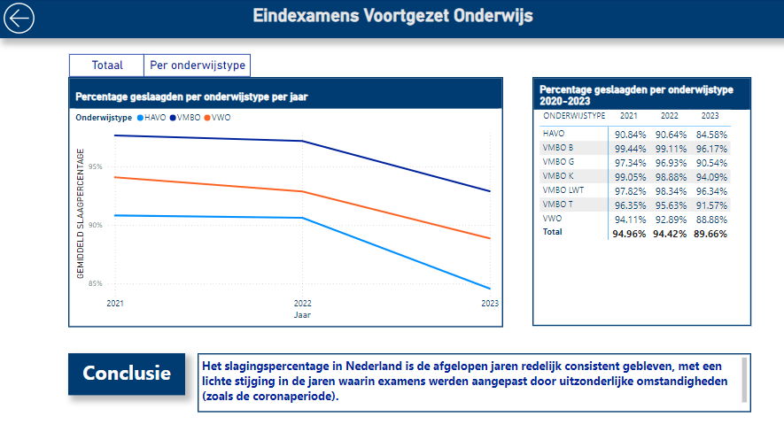

- Aanleiding van deze opdracht.
- Is er verschil in slagingspercentage tussen de opleidingsniveaus?
- Is er verschil in slagingspercentage tussen de studierichtingen?
- Is er verschil tussen de gemiddelde slagingspercentages per stad/dorp?
- Wat is het slagingspercentage over de jaren heen?

- Dit dashboard gaat over de slagingspercentage per stad/dorp.
- Top 10 gemeenten met de hoogste slagingspercentages.
- Top 10 gemeenten met de laagste slagingspercentages.
- Het aantal examenkandidaten en gemiddeld slagingspercentages.
- Segmenten in gemeenten en jaren.
- Conclusie is uit de data getrokken.
- Dit dashboard gaat over de slagingspercentages tussen opleidingsniveaus.
- Het aantal examenkandidaten en gemiddeld slagingspercentages per opleidingsniveau worden weergegeven.
- Segmenten in jaren.
- Conclusie is uit de data getrokken.
- Dit dashboard gaat over de slagingspercentages tussen studierichtingen
- Het aantal examenkandidaten en gemiddeld slagingspercentages per studierichting worden weergegeven.
- Segmenten in jaren.
- Conclusie is uit de data getrokken.

- Dit dashboard gaat over hoe het slagingspercentage zich ontwikkeld over de jaren heen.
- Het slagingspercentage over de jaren wordt met een grafiek weergegeven.
- Segmenten in opleidingsniveaus.
- Conclusie is uit de data getrokken.
- Opstellen Plan van Aanpak voor het gehele project
- Definieren van userstories
- Gegevenstransformatie in SQL Server
- Dataset in Power BI landen
- Dimensioneel modeliseren
- Data visualiseren in Power BI
- Sales overzicht dashboard opbouwen
- Totale omzet voor en na toegepaste korting
- Cumulatieve verkoop dit jaar en vorig jaar
- Segmenten in Periode, Locatie en Merk/type
- Analyses maken en conclusie trekken

- Klanten rapportage opbouwen
- Top 5 klanten met barchart weergeven
- Klantkaart inrichten
- Gegeven korting over alle klanten in kaart brengen
- Segmenten in Klant, Jaar en Maand
- Analyses maken en conclusie trekken

- Producten rapportage opbouwen
- Beste verkopende auto's met barchart weergeven
- Aantal verkochte auto's kard
- Grafiek over auto's kosten
- Segmenten in Periode, Merk en Type
- Analyses maken en conclusie trekken
- Interactive dashboard over verkoper statistiek
- Beste presterende verkopers lijst
- Meest verkochte auto merk/type per verkoper
- Gegeven korting per verkoper
- Segmenten in Verkoper, Jaar en Maand
- Analyses maken en conclusie trekken

- SQL data set koppelen met Power BI desktop
- Data opschonen in Power Query
- Interactive rapportage over een overzicht van 15 landen over een periode van 217 jaar
- Een interactieve vergelijking van twee landen
- Segmenten in Periode en Landen
- Analyses maken over de levensverwachting van land
- Segmenten in landen en periode
- EEn voorbeeld: er is een aanzienlijke dip in de levensverwachting in Duisland rond 1945
- Conclusie: de impact op de levensverwachting van Duisland ten tijde van tweede wereld oorlog
- Voorpagina van de bierwinkel
- Navigeren met twee knoppen naar andere pagina's

- Algemene informatie pagina
- Top 10 bier op basis van rating
- Top 10 brouwers
- Overzicht van alle bieren
- Segmenten in type bier, merk en brouwer
- Drill through naar de extra info over het bier
- Smaakprofiel pagina. Een bier wordt gevonden op basis van het smaakprofiel
- Met 10 slicers wordt een kleine selectie bier gefilterd die passen bij de smaak van de klant.
- Zoekfuncties waar de klant kan zoeken op stijl en brouwer.
- Drill through van een gekozen bier naar de extra info over het bier
- Informatie pagina over het specifieke biertje
- Gedetailleerd informatie (smaakprofiel,ranking,type,brouwer,merk,type,IBU en omschrijving)
- Interactive rapportage over de financieel overzicht van artiesten.
- Totaalbedrag, totaal gevraagde prijs, margin met DAX berekend en de resultaten gevisualiseerd.
- gemiddelde, maximale, minimale prijs met een ribbon chart weergegeven.
- Segmenten in artiesten, categorie en medium